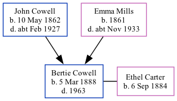

Bertie Charles Cowell 1888 - 1963
[ Home ] | [ Calendar ] | [ Surnames Index ] | [ Family History ]A baker's roundsman, assistant house keeper and wholesale provision salesman & truck driver and the youngest of 4 children of John Cowell (a police constable) and Emma MillsBertie Cowell, the third cousin twice-removed on the mother's side of Nigel Horne, was born in Tooting, London, England on Mar 5, 18881 and baptized in Upper Tooting, London, England on May 6, 1888. He married Ethel Carter in Willesden, London, England around Aug 19223.
Bertie spent all of his life in London, England. Throughout his life, he lived in several places around the county: at 71 Victoria Road in Willesden on Apr 5, 18916; at 28 Claremont Road, Kilburn on Mar 31, 19017, on Apr 2, 19118 and on Jun 19, 19219 (when he was living with his parents); at 148 Priory Park Road in Willesden in 19344 and in 19365; and at 65 Princes Avenue, Wembley on Sep 29, 19391. Bertie In 1921 he was working at C Wilson & Co Egg Merchants.
He died in 1963 in Ealing, London, England2 and was buried at St Marylebone Cemetery, Westminster, London on Apr 3, 1963.
Parents
- John Charles was born on May 10, 1862
- Emma Elizabeth was born in 1861
Citations
- 1939 Register - Findmypast (was the head of the household)
- England & Wales, Death Index: 1984-2005 Online publication - Provo, UT, USA: The Generations Network, Inc., 2007.Original data - General Register Office. England and Wales Civil Registration Indexes. London, England: General Register Office. © Crown copyright. Published by permission of the Cont
- England & Wales Marriages 1837-2005 - Findmypast
- London, England, Electoral Registers, 1832-1965 Ancestry.com Operations, Inc.
- London, England, Electoral Registers, 1832-1965 Ancestry.com Operations, Inc.
- 1891 England, Wales & Scotland Census - Findmypast (was age 3 and the son of the head of the household)
- 1901 England, Wales & Scotland Census - Findmypast (was age 13 and the son of the head of the household)
- 1911 Census for England & Wales - Findmypast (was age 23 and the son of the head of the household)
- 1921 Census Of England & Wales - Findmypast (was age 33 and the son of the head of the household)
Media
1939 Register Transcription - TNA-R39-0958-0958E-013-37
1891 England, Wales & Scotland Census - GBC/1891/0007931685
England & Wales births 1837-2006 - BMD/B/1888/1/AZ/000127/264
England & Wales deaths 1837-2007 - BMD/D/1963/1/AZ/000205/207
1911 England, Wales & Scotland Census Transcription - GBC-1911-RG14-06995-0873-4
1901 England, Wales & Scotland Census Transcription - GBC-1901-0008349758
Family Tree
Generated by ged2site. Last updated on Nov 13, 2024